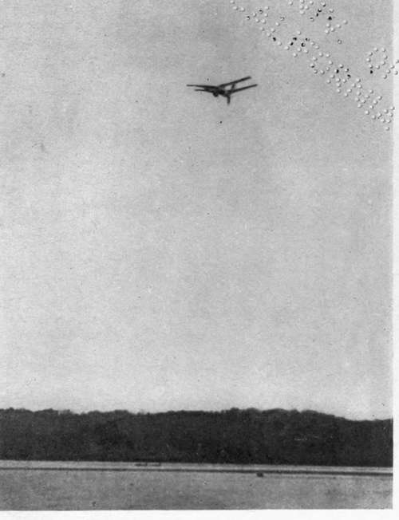

Chapter II. Flying Machine Types
Description
This section is from the book "The New Art Of Flying", by Waldemar Kaempffert. Also available from Amazon: The New Art of Flying.
Chapter II. Flying Machine Types
The flying creatures of nature — insects, birds, fishes, and bats — spread wings that lie in a single plane. Because their wings are thus disposed birds may be properly regarded as single-decked flying-machines or " monoplanes," in aviation parlance, and because the earliest attempts at flying were more or less slavish imitations of bird-flight, it was but natural that the monoplane was man's first conception of a flying-machine. Since birds are the most efficient flying-machines known, so far as power consumption for distance travelled and surface supported are concerned, the monoplane will probably always be regarded as the ideal type of aeroplane flying-machine.
It is a circumstance of considerable scientific moment that the wings of a gliding bird, such as an eagle, a buzzard, or a vulture, are wide in spread and narrow in width. Much painstaking experimentation by Langley and others has shown that the best shape of plane is that which is oblong; the span must be considerably greater than the width. In other words, science has experimentally approved the design of a bird's wings. In nature the proportion of span to width varies in different birds. The spread of an albatross' wings is fourteen times the width; the spread of a lark's wings is four times the width, which is the smallest ratio to be found among birds. The albatross is a more efficient flying-machine than the lark. Hence the albatross is a better model to follow and fourteen to one a better ratio than four to one.
Long spans are unwieldy, often too unwieldy for practical, artificial flight. Suppose we cut a long plane in half and mount one half over the other. The result is a two-decked machine, a " biplane." Such a biplane has somewhat less lifting power than the original monoplane, and yet it has the same amount of entering edge. Moreover, the biplane is a little steadier in the air than the monoplane and therefore a little safer, just as a box-kite is steadier than the old-fashioned single-surface kite. Still, the difference in stability between biplane and monoplane is so slight that designers base their preferences for one type or the other on other considerations. Both types are inherently so unstable that it requires a skilled hand to correct their capsizing tendencies.
Fig. 4. Langley's aerodrome in flight on May 6, 1896, on the Potomac River at Quantico. This is the first photograph ever made of an aeroplane in flight.
From an instantaneous photograph by Dr. Alexander Graham Bell.
By placing one plane over another certain structural advantages are obtained. It is comparatively easy to tie two superposed planes together and to form a strong, bridge-like truss, which was first done by Chanute. The proper support of the outstretched surfaces of a monoplane, on the other hand, is a matter of some difficulty.
To correct the inherent instability of both monoplanes and biplanes and to make them safer machines, tails are frequently added. Stability and safety are thus gained at the expense of driving power; for the increased surface of the tail means more resisting surface and therefore less speed. An engine of twenty horse-power will drive a tailless Wright machine; tailed Voisin machines with large, heavy cellular tails have refused to rise at times even when equipped with fifty horsepower motors.
If a monoplane were to fall vertically like a parachute, it would offer the resistance of its entire surface to the fall; if a biplane were to fall, it would offer the resistance of only one of its planes to the fall. Hence the monoplane is a better parachute than the biplane. The point is perhaps of slight value, because if a skilful aviator is high enough when his motor fails him, he can always glide to the ground on a slant which may be miles in length. Paradoxical as it may seem, the greater the distance through which he may fall, the better are an aviator's chances of reaching the ground with an unbroken neck. At a slight elevation from the ground, both monoplanes and biplanes are in a precarious position in case of motor stoppages. There is no distance to glide. Hence they must fall.
Whether the biplane is a better type of machine than the monoplane, it would be difficult, if not impossible, to maintain. It is certain, however, that the biplane has been brought to a higher state of perfection than the monoplane, probably because it was the first successful type of a man-carrying, motor-driven flyingmachine. The older the type, the more marked will be the improvements to which it will be subjected. It is curious, too, that most of the pioneer aviators have been advocates of the biplane type. Lilienthal met his death in a biplane. Chanute, who brilliantly continued Lilienthal's work, and the Wright Brothers brought the motorless biplane glider to its highest pitch of perfection. The first flight ever made by a man-carrying, motor-driven machine was that of a Wright biplane. Voisin, Curtiss, and Farman, all of them experienced designers, have performed their most brilliant feats in designing or flying biplanes.
Chanute made many experiments with gliding-machines having more than two superposed surfaces; but he found in the end that the biplane type was most satisfactory. Despite the lessons to be learned from his painstaking experiments, inventors have not been wanting who have worked on the three-deck or triplane principle. One of these is Farman, who designed the Farman-Voisin three-decked machine. Others are A. V. Roe in England and Vanniman in France. Vanniman and Farman have since abandoned their triplane structures, and thus rather confirmed Chanute's conclusions. It is interesting to know that the triplane goes back as far as 1868, in which year an inventor named Stringfellow built a three-decked model.
Continue to: